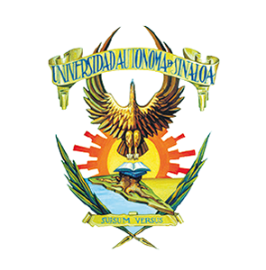
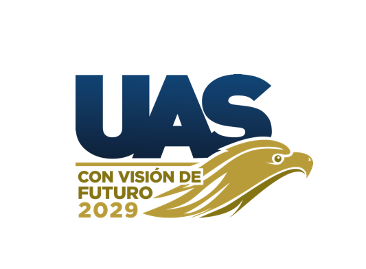

Mensaje de Bienvenida
El Colegio de Ciencias Agropecuarias (CCA) de la Universidad Autónoma de Sinaloa les da la más cordial bienvenida a nuestro portal oficial de posgrados.
Nuestra misión fundamental es impulsar la formación de capital humano altamente calificado a nivel de Maestría y Doctorado en Ciencias Agropecuarias, orientado a resolver los desafíos más apremiantes del sector productivo, la sanidad animal y vegetal, la inocuidad alimentaria y la sustentabilidad ambiental.
A través de un Núcleo Académico de excelencia respaldado por el Sistema Nacional de Investigadoras e Investigadores (SNII) y programas pertenecientes al Sistema Nacional de Posgrados (SNP), refrendamos nuestro compromiso con la investigación de vanguardia, la vinculación y la innovación con sentido social.
DCA: Objetivo, Misión, Visión y Metas
Objetivo
Formar doctores en ciencias de alto nivel académico e intelectual, capaces de detectar problemas relevantes del ámbito agropecuario y proponer soluciones originales mediante la generación y aplicación de conocimiento científico innovador. Dirigir grupos de investigación y colaborar en la formación de recursos humanos de alto nivel, así como difundir el conocimiento científico y tecnológico del área para contribuir a la seguridad alimentaria con una visión de desarrollo agropecuario sustentable.
Misión
Formar integralmente profesionales competentes en Medicina Veterinaria y Zootecnia, Agronomía y Ciencias Pesqueras, con cultura científica y humanista; capaces de generar, adaptar y aplicar conocimiento pertinente a la realidad regional y nacional, y brindar asesoría y servicios especializados que contribuyan al desarrollo sustentable y equitativo del país. Difundir la ciencia y la cultura bajo el principio de libertad y compromiso social para responder con oportunidad a los problemas del entorno.
Visión al 2026
Ser unidad académica con reconocimiento regional por su alta calidad académica y compromiso social, vinculada con las necesidades de la región y del país. Egresados competentes, con formación humanista e integral, capaces de atender con oportunidad las demandas de la sociedad. Referente en el noroeste de México por generar conocimiento y tecnologías pertinentes; con comunidad plural, respetuosa y transparente, que garantiza condiciones para la superación permanente.
Metas
- Mantener una eficiencia terminal del 60% en un lapso de 4.5 años.
- Incorporar al mercado laboral al 100% de los graduados.
- Conservar la pertenencia al Programa Nacional de Posgrado de Calidad.
- Alcanzar 60% del núcleo académico básico en el SNI.
- Lograr movilidad internacional anual de 20% de los miembros del núcleo académico básico.
- Incorporar al 80% de los estudiantes en acciones de movilidad académica.
- Lograr participación del 100% de los estudiantes como ponentes en congresos nacionales o internacionales durante su permanencia en el programa.
MCA: Objetivo, Misión, Visión y Metas
Objetivo
Formar maestros en ciencias agropecuarias, capaces de generar y difundir nuevo conocimiento científico-tecnológico, que contribuya a la producción de alimentos y el aseguramiento de la salud pública, en un marco de desarrollo sustentable que permita la conservación de los recursos naturales, el equilibrio ambiental y promueva el bienestar social.
Misión
Formar integralmente profesionales competentes en el área de la Medicina Veterinaria y la Zootecnia, de la Agronomía y de las Ciencias Pesqueras, portadores de una cultura científica y humanista; capaces de generar, adaptar, recrear y aplicar conocimientos que atiendan con prioridad la realidad regional y nacional, y brindar asesoría y servicios especializados que contribuyan al desarrollo sustentable y equitativo del país; y, difundir la ciencia y la cultura bajo el principio de libertad y compromiso social, para responder con oportunidad a los problemas de su entorno.
Visión al 2026
Ser Facultades (UA) con reconocimiento regional por su alta calidad académica con compromiso social, vinculada con las necesidades de la región y del país. Sus egresados son competentes, con una formación humanista e integral, para atender con oportunidad las necesidades y demandas de la sociedad. Es referente en la región del noroeste de México; generador de conocimientos, tecnologías relevantes y pertinentes, y fuente de superación para los profesionales del área. Tiene una comunidad plural, autocrítica y respetuosa, capaz de generar las condiciones para su superación permanente; reconoce con equidad el esfuerzo de sus miembros y mantiene una cultura de transparencia y rendición de cuentas.
Metas
- Lograr, al menos 70% de eficiencia terminal por cohorte, en un lapso entre inscripción y graduación de 3 años.
- Que el 100% de los egresados, de cada generación, se incorporen al mercado laboral de su competencia.
- Consolidarse como un programa académico con reconocimiento en el noroeste del país.
Normatividad y Reglamentos
Los programas de posgrado del Colegio de Ciencias Agropecuarias se rigen bajo el marco normativo y reglamentos generales de la Universidad Autónoma de Sinaloa y los lineamientos del Sistema Nacional de Posgrados (CONAHCYT).
- Reglamento General de Estudios de Posgrado de la UAS.
- Normativa y Lineamientos para Comités Tutoriales de Tesis.
- Código de Ética e Integridad Científica.
- Guías para trámites de titulación y examen de grado.
Logotipos Oficiales
Descarga y consulta de logotipos oficiales en alta resolución para presentaciones, tesis y artículos científicos:

Escudo UAS
Consolidación 2029Directorio
Coordinación de Posgrado CCA
Facultad de Medicina Veterinaria y Zootecnia - UAS
Boulevard San Ángel 3800, Colonia San Benito, C.P. 80246, Culiacán, Sinaloa, México.
Teléfono: (667) 718-1650
Correo Electrónico: posgradocca@uas.edu.mx
Horario de Atención: Lunes a Viernes de 9:00 a 15:00 hrs.
Coordinación del Doctorado en Ciencias Agropecuarias (DCA)
Correo Electrónico: doctoradocca@uas.edu.mx
Teléfono: (667) 718-1650 Ext. 102
Coordinación de la Maestría en Ciencias Agropecuarias (MCA)
Correo Electrónico: maestriacca@uas.edu.mx
Teléfono: (667) 718-1650 Ext. 103